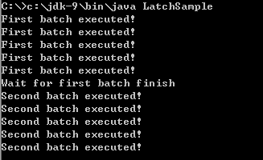
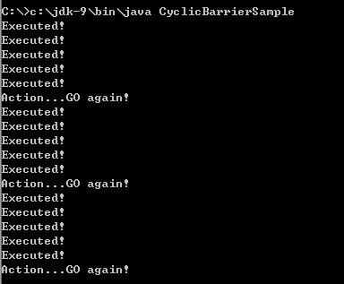
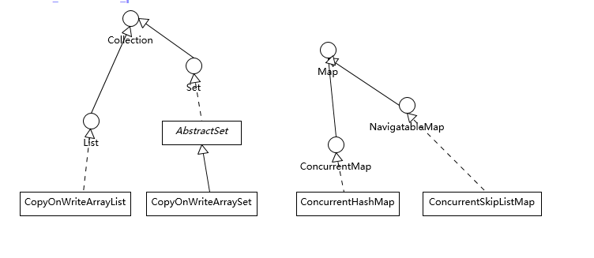
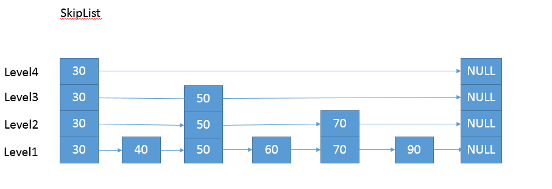

- 00 开篇词 以面试题为切入点，有效提升你的Java内功-极客时间.md.html
- 01 谈谈你对Java平台的理解？.md.html
- 02 Exception和Error有什么区别？-极客时间.md.html
- 03 谈谈final、finally、 finalize有什么不同？-极客时间.md.html
- 04 强引用、软引用、弱引用、幻象引用有什么区别？-极客时间.md.html
- 05 String、StringBuffer、StringBuilder有什么区别？-极客时间.md.html
- 06 动态代理是基于什么原理？-极客时间.md.html
- 07 int和Integer有什么区别？-极客时间.md.html
- 08 对比Vector、ArrayList、LinkedList有何区别？-极客时间.md.html
- 09 对比Hashtable、HashMap、TreeMap有什么不同？-极客时间.md.html
- 10 如何保证集合是线程安全的 ConcurrentHashMap如何实现高效地线程安全？-极客时间.md.html
- 11 Java提供了哪些IO方式？ NIO如何实现多路复用？-极客时间.md.html
- 12 Java有几种文件拷贝方式？哪一种最高效？-极客时间.md.html
- 13 谈谈接口和抽象类有什么区别？-极客时间.md.html
- 14 谈谈你知道的设计模式？-极客时间.md.html
- 15 synchronized和ReentrantLock有什么区别呢？-极客时间.md.html
- 16 synchronized底层如何实现？什么是锁的升级、降级？-极客时间.md.html
- 17 一个线程两次调用start()方法会出现什么情况？-极客时间.md.html
- 18 什么情况下Java程序会产生死锁？如何定位、修复？-极客时间.md.html
- 19 Java并发包提供了哪些并发工具类？-极客时间.md.html
- 20 并发包中的ConcurrentLinkedQueue和LinkedBlockingQueue有什么区别？-极客时间.md.html
- 21 Java并发类库提供的线程池有哪几种？ 分别有什么特点？-极客时间.md.html
- 22 AtomicInteger底层实现原理是什么？如何在自己的产品代码中应用CAS操作？-极客时间.md.html
- 23 请介绍类加载过程，什么是双亲委派模型？-极客时间.md.html
- 24 有哪些方法可以在运行时动态生成一个Java类？-极客时间.md.html
- 25 谈谈JVM内存区域的划分，哪些区域可能发生OutOfMemoryError-极客时间.md.html
- 26 如何监控和诊断JVM堆内和堆外内存使用？-极客时间.md.html
- 27 Java常见的垃圾收集器有哪些？-极客时间.md.html
- 28 谈谈你的GC调优思路-极客时间.md.html
- 29 Java内存模型中的happen-before是什么？-极客时间.md.html
- 30 Java程序运行在Docker等容器环境有哪些新问题？-极客时间.md.html
- 31 你了解Java应用开发中的注入攻击吗？-极客时间.md.html
- 32 如何写出安全的Java代码？-极客时间.md.html
- 33 后台服务出现明显“变慢”，谈谈你的诊断思路？-极客时间.md.html
- 34 有人说“Lambda能让Java程序慢30倍”，你怎么看？-极客时间.md.html
- 35 JVM优化Java代码时都做了什么？-极客时间.md.html
- 36 谈谈MySQL支持的事务隔离级别，以及悲观锁和乐观锁的原理和应用场景？-极客时间.md.html
- 37 谈谈Spring Bean的生命周期和作用域？-极客时间.md.html
- 38 对比Java标准NIO类库，你知道Netty是如何实现更高性能的吗？-极客时间.md.html
- 39 谈谈常用的分布式ID的设计方案？Snowflake是否受冬令时切换影响？-极客时间.md.html
- 周末福利 一份Java工程师必读书单-极客时间.md.html
- 周末福利 谈谈我对Java学习和面试的看法-极客时间.md.html
- 结束语 技术没有终点-极客时间.md.html
- 捐赠
19 Java并发包提供了哪些并发工具类？-极客时间
通过前面的学习，我们一起回顾了线程、锁等各种并发编程的基本元素，也逐步涉及了 Java 并发包中的部分内容，相信经过前面的热身，我们能够更快地理解 Java 并发包。
今天我要问你的问题是，Java 并发包提供了哪些并发工具类？
典型回答
我们通常所说的并发包也就是 java.util.concurrent 及其子包，集中了 Java 并发的各种基础工具类，具体主要包括几个方面：
- 提供了比 synchronized 更加高级的各种同步结构，包括 CountDownLatch、CyclicBarrier、Semaphore 等，可以实现更加丰富的多线程操作，比如利用 Semaphore 作为资源控制器，限制同时进行工作的线程数量。
- 各种线程安全的容器，比如最常见的 ConcurrentHashMap、有序的 ConcurrentSkipListMap，或者通过类似快照机制，实现线程安全的动态数组 CopyOnWriteArrayList 等。
- 各种并发队列实现，如各种 BlockingQueue 实现，比较典型的 ArrayBlockingQueue、 SynchronousQueue 或针对特定场景的 PriorityBlockingQueue 等。
- 强大的 Executor 框架，可以创建各种不同类型的线程池，调度任务运行等，绝大部分情况下，不再需要自己从头实现线程池和任务调度器。
考点分析
这个题目主要考察你对并发包了解程度，以及是否有实际使用经验。我们进行多线程编程，无非是达到几个目的：
- 利用多线程提高程序的扩展能力，以达到业务对吞吐量的要求。
- 协调线程间调度、交互，以完成业务逻辑。
- 线程间传递数据和状态，这同样是实现业务逻辑的需要。
所以，这道题目只能算作简单的开始，往往面试官还会进一步考察如何利用并发包实现某个特定的用例，分析实现的优缺点等。
如果你在这方面的基础比较薄弱，我的建议是：
- 从总体上，把握住几个主要组成部分（前面回答中已经简要介绍）。
- 理解具体设计、实现和能力。
- 再深入掌握一些比较典型工具类的适用场景、用法甚至是原理，并熟练写出典型的代码用例。
掌握这些通常就够用了，毕竟并发包提供了方方面面的工具，其实很少有机会能在应用中全面使用过，扎实地掌握核心功能就非常不错了。真正特别深入的经验，还是得靠在实际场景中踩坑来获得。
知识扩展
首先，我们来看看并发包提供的丰富同步结构。前面几讲已经分析过各种不同的显式锁，今天我将专注于
- CountDownLatch，允许一个或多个线程等待某些操作完成。
- CyclicBarrier，一种辅助性的同步结构，允许多个线程等待到达某个屏障。
- Semaphore，Java 版本的信号量实现。
Java 提供了经典信号量（Semaphore）的实现，它通过控制一定数量的允许（permit）的方式，来达到限制通用资源访问的目的。你可以想象一下这个场景，在车站、机场等出租车时，当很多空出租车就位时，为防止过度拥挤，调度员指挥排队等待坐车的队伍一次进来 5 个人上车，等这 5 个人坐车出发，再放进去下一批，这和 Semaphore 的工作原理有些类似。
你可以试试使用 Semaphore 来模拟实现这个调度过程：
import java.util.concurrent.Semaphore;
public class UsualSemaphoreSample {
public static void main(String[] args) throws InterruptedException {
System.out.println("Action...GO!");
Semaphore semaphore = new Semaphore(5);
for (int i = 0; i < 10; i++) {
Thread t = new Thread(new SemaphoreWorker(semaphore));
t.start();
}
}
}
class SemaphoreWorker implements Runnable {
private String name;
private Semaphore semaphore;
public SemaphoreWorker(Semaphore semaphore) {
this.semaphore = semaphore;
}
@Override
public void run() {
try {
log("is waiting for a permit!");
semaphore.acquire();
log("acquired a permit!");
log("executed!");
} catch (InterruptedException e) {
e.printStackTrace();
} finally {
log("released a permit!");
semaphore.release();
}
}
private void log(String msg){
if (name == null) {
name = Thread.currentThread().getName();
}
System.out.println(name + " " + msg);
}
}
这段代码是比较典型的 Semaphore 示例，其逻辑是，线程试图获得工作允许，得到许可则进行任务，然后释放许可，这时等待许可的其他线程，就可获得许可进入工作状态，直到全部处理结束。编译运行，我们就能看到 Semaphore 的允许机制对工作线程的限制。
但是，从具体节奏来看，其实并不符合我们前面场景的需求，因为本例中 Semaphore 的用法实际是保证，一直有 5 个人可以试图乘车，如果有 1 个人出发了，立即就有排队的人获得许可，而这并不完全符合我们前面的要求。
那么，我再修改一下，演示个非典型的 Semaphore 用法。
import java.util.concurrent.Semaphore;
public class AbnormalSemaphoreSample {
public static void main(String[] args) throws InterruptedException {
Semaphore semaphore = new Semaphore(0);
for (int i = 0; i < 10; i++) {
Thread t = new Thread(new MyWorker(semaphore));
t.start();
}
System.out.println("Action...GO!");
semaphore.release(5);
System.out.println("Wait for permits off");
while (semaphore.availablePermits()!=0) {
Thread.sleep(100L);
}
System.out.println("Action...GO again!");
semaphore.release(5);
}
}
class MyWorker implements Runnable {
private Semaphore semaphore;
public MyWorker(Semaphore semaphore) {
this.semaphore = semaphore;
}
@Override
public void run() {
try {
semaphore.acquire();
System.out.println("Executed!");
} catch (InterruptedException e) {
e.printStackTrace();
}
}
}
注意，上面的代码，更侧重的是演示 Semaphore 的功能以及局限性，其实有很多线程编程中的反实践，比如使用了 sleep 来协调任务执行，而且使用轮询调用 availalePermits 来检测信号量获取情况，这都是很低效并且脆弱的，通常只是用在测试或者诊断场景。
总的来说，我们可以看出 Semaphore 就是个计数器，其基本逻辑基于 acquire/release，并没有太复杂的同步逻辑。
如果 Semaphore 的数值被初始化为 1，那么一个线程就可以通过 acquire 进入互斥状态，本质上和互斥锁是非常相似的。但是区别也非常明显，比如互斥锁是有持有者的，而对于 Semaphore 这种计数器结构，虽然有类似功能，但其实不存在真正意义的持有者，除非我们进行扩展包装。
下面，来看看 CountDownLatch 和 CyclicBarrier，它们的行为有一定的相似度，经常会被考察二者有什么区别，我来简单总结一下。
- CountDownLatch 是不可以重置的，所以无法重用；而 CyclicBarrier 则没有这种限制，可以重用。
- CountDownLatch 的基本操作组合是 countDown/await。调用 await 的线程阻塞等待 countDown 足够的次数，不管你是在一个线程还是多个线程里 countDown，只要次数足够即可。所以就像 Brain Goetz 说过的，CountDownLatch 操作的是事件。
- CyclicBarrier 的基本操作组合，则就是 await，当所有的伙伴（parties）都调用了 await，才会继续进行任务，并自动进行重置。注意，正常情况下，CyclicBarrier 的重置都是自动发生的，如果我们调用 reset 方法，但还有线程在等待，就会导致等待线程被打扰，抛出 BrokenBarrierException 异常。CyclicBarrier 侧重点是线程，而不是调用事件，它的典型应用场景是用来等待并发线程结束。
如果用 CountDownLatch 去实现上面的排队场景，该怎么做呢？假设有 10 个人排队，我们将其分成 5 个人一批，通过 CountDownLatch 来协调批次，你可以试试下面的示例代码。
import java.util.concurrent.CountDownLatch;
public class LatchSample {
public static void main(String[] args) throws InterruptedException {
CountDownLatch latch = new CountDownLatch(6);
for (int i = 0; i < 5; i++) {
Thread t = new Thread(new FirstBatchWorker(latch));
t.start();
}
for (int i = 0; i < 5; i++) {
Thread t = new Thread(new SecondBatchWorker(latch));
t.start();
}
// 注意这里也是演示目的的逻辑，并不是推荐的协调方式
while ( latch.getCount() != 1 ){
Thread.sleep(100L);
}
System.out.println("Wait for first batch finish");
latch.countDown();
}
}
class FirstBatchWorker implements Runnable {
private CountDownLatch latch;
public FirstBatchWorker(CountDownLatch latch) {
this.latch = latch;
}
@Override
public void run() {
System.out.println("First batch executed!");
latch.countDown();
}
}
class SecondBatchWorker implements Runnable {
private CountDownLatch latch;
public SecondBatchWorker(CountDownLatch latch) {
this.latch = latch;
}
@Override
public void run() {
try {
latch.await();
System.out.println("Second batch executed!");
} catch (InterruptedException e) {
e.printStackTrace();
}
}
}
CountDownLatch 的调度方式相对简单，后一批次的线程进行 await，等待前一批 countDown 足够多次。这个例子也从侧面体现出了它的局限性，虽然它也能够支持 10 个人排队的情况，但是因为不能重用，如果要支持更多人排队，就不能依赖一个 CountDownLatch 进行了。其编译运行输出如下：

在实际应用中的条件依赖，往往没有这么别扭，CountDownLatch 用于线程间等待操作结束是非常简单普遍的用法。通过 countDown/await 组合进行通信是很高效的，通常不建议使用例子里那个循环等待方式。
如果用 CyclicBarrier 来表达这个场景呢？我们知道 CyclicBarrier 其实反映的是线程并行运行时的协调，在下面的示例里，从逻辑上，5 个工作线程其实更像是代表了 5 个可以就绪的空车，而不再是 5 个乘客，对比前面 CountDownLatch 的例子更有助于我们区别它们的抽象模型，请看下面的示例代码：
import java.util.concurrent.BrokenBarrierException;
import java.util.concurrent.CyclicBarrier;
public class CyclicBarrierSample {
public static void main(String[] args) throws InterruptedException {
CyclicBarrier barrier = new CyclicBarrier(5, new Runnable() {
@Override
public void run() {
System.out.println("Action...GO again!");
}
});
for (int i = 0; i < 5; i++) {
Thread t = new Thread(new CyclicWorker(barrier));
t.start();
}
}
static class CyclicWorker implements Runnable {
private CyclicBarrier barrier;
public CyclicWorker(CyclicBarrier barrier) {
this.barrier = barrier;
}
@Override
public void run() {
try {
for (int i=0; i<3 ; i++){
System.out.println("Executed!");
barrier.await();
}
} catch (BrokenBarrierException e) {
e.printStackTrace();
} catch (InterruptedException e) {
e.printStackTrace();
}
}
}
}
为了让输出更能表达运行时序，我使用了 CyclicBarrier 特有的 barrierAction，当屏障被触发时，Java 会自动调度该动作。因为 CyclicBarrier 会自动进行重置，所以这个逻辑其实可以非常自然的支持更多排队人数。其编译输出如下：

Java 并发类库还提供了Phaser，功能与 CountDownLatch 很接近，但是它允许线程动态地注册到 Phaser 上面，而 CountDownLatch 显然是不能动态设置的。Phaser 的设计初衷是，实现多个线程类似步骤、阶段场景的协调，线程注册等待屏障条件触发，进而协调彼此间行动，具体请参考这个例子。
接下来，我来梳理下并发包里提供的线程安全 Map、List 和 Set。首先，请参考下面的类图。

你可以看到，总体上种类和结构还是比较简单的，如果我们的应用侧重于 Map 放入或者获取的速度，而不在乎顺序，大多推荐使用 ConcurrentHashMap，反之则使用 ConcurrentSkipListMap；如果我们需要对大量数据进行非常频繁地修改，ConcurrentSkipListMap 也可能表现出优势。
我在前面的专栏，谈到了普通无顺序场景选择 HashMap，有顺序场景则可以选择类似 TreeMap 等，但是为什么并发容器里面没有 ConcurrentTreeMap 呢？
这是因为 TreeMap 要实现高效的线程安全是非常困难的，它的实现基于复杂的红黑树。为保证访问效率，当我们插入或删除节点时，会移动节点进行平衡操作，这导致在并发场景中难以进行合理粒度的同步。而 SkipList 结构则要相对简单很多，通过层次结构提高访问速度，虽然不够紧凑，空间使用有一定提高（O(nlogn)），但是在增删元素时线程安全的开销要好很多。为了方便你理解 SkipList 的内部结构，我画了一个示意图。

关于两个 CopyOnWrite 容器，其实 CopyOnWriteArraySet 是通过包装了 CopyOnWriteArrayList 来实现的，所以在学习时，我们可以专注于理解一种。
首先，CopyOnWrite 到底是什么意思呢？它的原理是，任何修改操作，如 add、set、remove，都会拷贝原数组，修改后替换原来的数组，通过这种防御性的方式，实现另类的线程安全。请看下面的代码片段，我进行注释的地方，可以清晰地理解其逻辑。
public boolean add(E e) {
synchronized (lock) {
Object[] elements = getArray();
int len = elements.length;
// 拷贝
Object[] newElements = Arrays.copyOf(elements, len + 1);
newElements[len] = e;
// 替换
setArray(newElements);
return true;
}
}
final void setArray(Object[] a) {
array = a;
}
所以这种数据结构，相对比较适合读多写少的操作，不然修改的开销还是非常明显的。
今天我对 Java 并发包进行了总结，并且结合实例分析了各种同步结构和部分线程安全容器，希望对你有所帮助。
一课一练
关于今天我们讨论的题目你做到心中有数了吗？留给你的思考题是，你使用过类似 CountDownLatch 的同步结构解决实际问题吗？谈谈你的使用场景和心得。
请你在留言区写写你对这个问题的思考，我会选出经过认真思考的留言，送给你一份学习奖励礼券，欢迎你与我一起讨论。
你的朋友是不是也在准备面试呢？你可以“请朋友读”，把今天的题目分享给好友，或许你能帮到他。
© 2019 - 2023 Liangliang Lee. Powered by gin and hexo-theme-book.